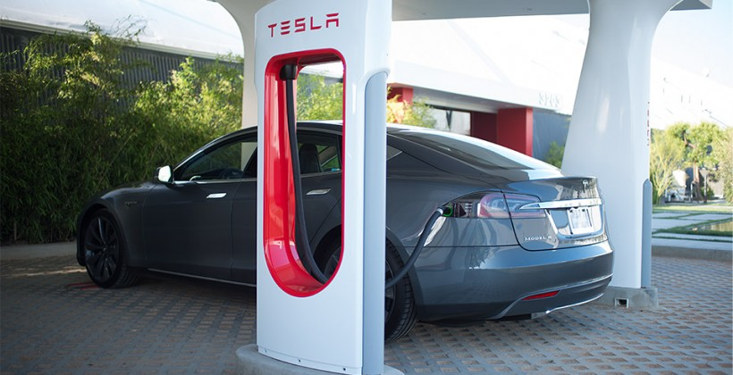
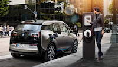

Using a Supercharger is easy. You simply pull up, plug in, and in approximately 30 minutes you have enough range to get to your destination or the next station. All new Model S and Model X come standard with Supercharger technology. Miles of range After a half hour charge 10 miles30A Public Charging Station14 miles40A High Voltage Outlet170 milesTesla Supercharger Tesla Superchargers provide up to 170 miles of range in as little as 30 minutes. Engineered for Performance Supercharging takes advantage of Tesla’s unique battery architecture. Each battery's connections, cell chemistry, and cooling system are engineered to move significant power out of the battery pack during hard accelerations and uphill driving. Driving (discharging) and charging use the same systems to move energy out of and into the battery. Supercharging utilizes the car's discharge capacity to flow a similar amount of power back into the battery pack through dedicated high voltage cables. The car’s onboard computer constantly monitors the battery during both driving and charging to ensure that it maintains peak performance. Tesla is the only EV manufacturer capable of charging vehicles at up to 120 kW, which equates to about 170 miles of range in as little as 30 minutes. There are many factors that affect the actual charge rate, including ambient temperature, utility grid restrictions and charging traffic, amongst others. Source www.tesla.com
AC Level 2 AC energy to the vehicle's on-board charger; 208 - 240 V, single phase. The maximum current specified is 32 A (continuous) with a branch circuit breaker rated at 40 A. Maximum continuous input power is specified as 7.68 kW (= 240 V × 32 A*).
Most abundant are “level 2” chargers that charge your car at about the same rate as a home EVSE. But there are also “level 3” chargers (technically called DC fast chargers) that charge much, much faster. They aren’t technically called “level 3” chargers since level 1 and level 2 chargers provide AC electricity to your car via your onboard charging while these faster chargers bypass the onboard charger and provide DC electricity to your battery via a special charging port. But to keep things simple for consumers, we prefer the term “level 3 charging.” Furthermore, we’ve gone and coined Tesla Supercharging as “level 4 charging” since it is much faster than level 3 charging. CHAdeMO: These level 3 DC fast chargers are much more common than SAE Combo fast chargers at the moment. They work with the most popular electric car in the world, the Nissan LEAF, and are installed at Nissan dealerships across the nation. Aside from the LEAF, other cars that can use them are the Mitsubishi i-MiEV, Kia Soul EV, and (with an adaptor) Tesla Model S. Also worth noting here is that Nissan has a “No Charge to Charge” program in several states in which LEAF drivers can charge at these stations for free. At the moment, CHAdeMO fast chargers have a max power output of 50 kW. SAE Combo (aka CCS): While this level 3 DC fast-charging standard is preferred by German and US automakers, they haven’t yet built the network out to the extent that Nissan has built out the CHAdeMO network. So, it’s generally a bit harder to find SAE Combo fast chargers along the routes you are going to travel. Cars that use the SAE Combo standard include: the BMW i3, Chevy Spark EV, and Volkswagen e-Golf. At the moment, SAE Combo fast chargers have a max power output of 50 kW. Supercharger: At the moment, only Teslas can use the Tesla Supercharger network. Superchargers are installed widely across the US (and Europe) and can charge an electric car faster than any other chargers out there. Tesla is quickly growing the Supercharger network, and this creates one large competitive advantage for the popular EV company. At the moment, Tesla Superchargers have a max power output of 120 kW. SOURCE. WWW.EVOBSESSION.COM